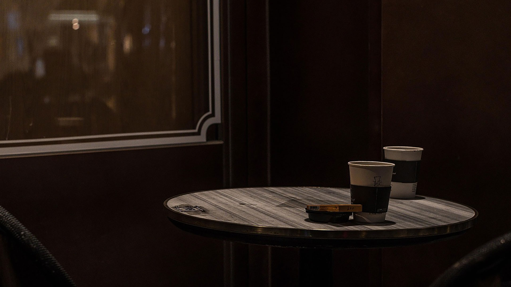

SPACE
INTERIOR & OBJET
머무는 순간이 특별해지는 공간
ANGLE340의 공간을 직접 만나보세요 인테리어부터 소장 오브제까지, 공간의 모든 요소를 소개합니다
INTERIOR & OBJET
머무는 순간이 특별해지는 공간
ANGLE340의 공간을 직접 만나보세요 인테리어부터 소장 오브제까지, 공간의 모든 요소를 소개합니다
카페공간의
특별한 가치를
경험하다.
ANGLE 340의 공간은 단순히 커피를 마시는 장소를 넘어, 하나의 전시처럼 체험되는 곳입니다.
1950~70년대의 빈티지 가구와 조명, 수집된 오브제들이 곳곳에 배치되어
있어, 방문객은 마치 시간 여행을 하는 듯한 느낌을 받습니다.
질감이 살아있는 목재 테이블과 부드러운 곡선의 의자, 곳곳에 배치된 레트로한 소품들이 따뜻한 분위기를
만들어줍니다.
창가 좌석은 자연광이 풍부하게 들어오는 위치에 마련되어 있어, 바깥 풍경과 함께 사색하거나 독서를 즐기기에 좋습니다.
ANGLE 340은 모든 요소가 조화를
이루며, 커피 한 잔과 함께 머무는 그 순간을 특별한 경험으로 바꾸어줍니다.
Inspiration Space
빛과 그림자가 어우러진 창가 자리는, 일상에서 벗어난 새로운 시선을 제공합니다.
오래된 가구와 감성적인 오브제가 공간을 채우며, 머무는 순간마다 작은 영감이 피어납니다.
ANGLE340의 공간은 하루를 마무리하며 나만의 리듬으로 휴식을 즐길 수 있는 특별한 장소입니다.

Enjoy Interior and Objet
1950~70년대의 오리지널 가구와 조명은 단순한 장식이 아닌 공간의 이야기를 완성합니다.
시간이 머문 듯한 질감의 벽과 바닥은 따뜻하고 아늑한 분위기를 더해줍니다.
창가로 스며드는 자연광은 하루의 흐름을 따라 공간의 감도를 바꾸며 감성을 자극합니다.
각 좌석에는 앉은 이만의 시선이 담기며, 휴식과 사색을 위한 여유가 흘러넘칩니다.
ANGLE340의 공간은 커피 이상의 경험, 삶의 장면 하나로 기억될 수 있도록 설계되었습니다.
Warm Window Moments
앵글340의 창가 좌석은 시간에 따라 변하는 빛의 흐름을 따라 감성이 머무는 공간입니다.
따뜻한 나무 질감과 빈티지 오브제가 어우러진 창가에서,
바쁜 도심 속 당신만의 속도로 하루를 마무리할 수 있습니다.
이곳은 단순한 좌석이 아닌, 나만의 시선을 찾는 순간을 선물합니다.